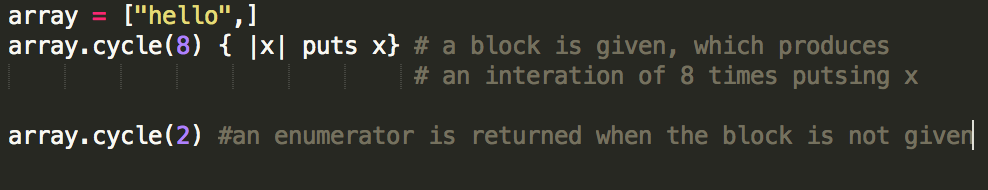
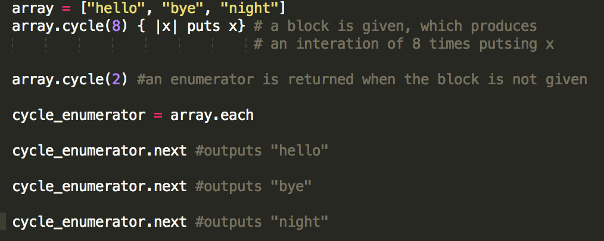

Enumerable#cycle
July 12th, 2015
What is an Enumerable module you might ask? Well the answer is that the module provides a set of methods a way to traverse, sort, search and manipulate collections of data. The only requirement of classes that use Enumerables require is that the class has to define an instance method called each, and in return, the Enumerable gives the objects of the specific class with different sorts of collection related behaviors.
For today's blog I am going to focus in on Enumerable#cycle.
What the cycle method does is that when called on an object, it iterates infinitely, which produces an infinite loop(When called without a block). When passing an argument to cycle, it specifies to the number of times to "cycle", not the number of elements to cycle through.

When #cycle is not passed to a block, it automatically returns an Enumerator. When that Enumerator is retrieved, it can use all different sorts of methods to retrieve and manipulate data. From there we can chain method #cycle, in order to find the next, last, and other internal methods that ruby has already built in.

The example above shows an example of how the #cycle Enumerator works. Note that when calling "next" on the cycle_enumerator produces a different value each time. This works because it originated from #cycle, and by calling next, it just returns the next element in the array via the cycle circle. Using these enumerable methods will able us to use more pragmatic and readable code. Seems like a win win to me!